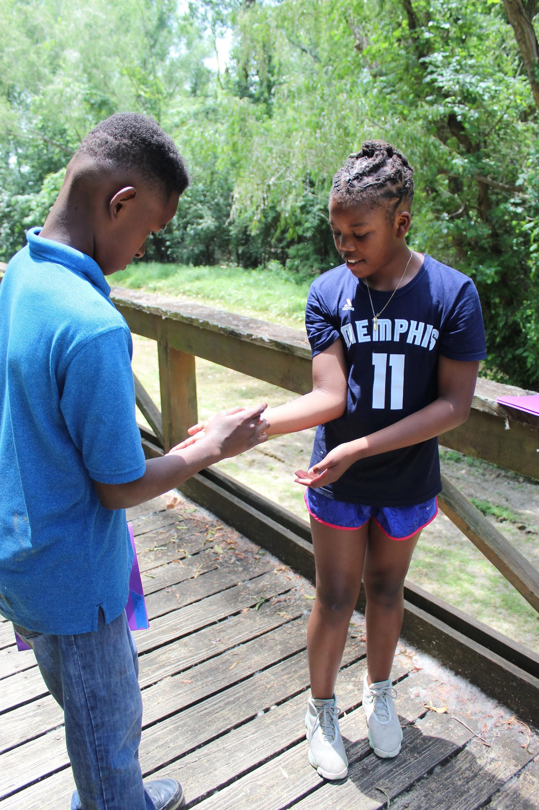
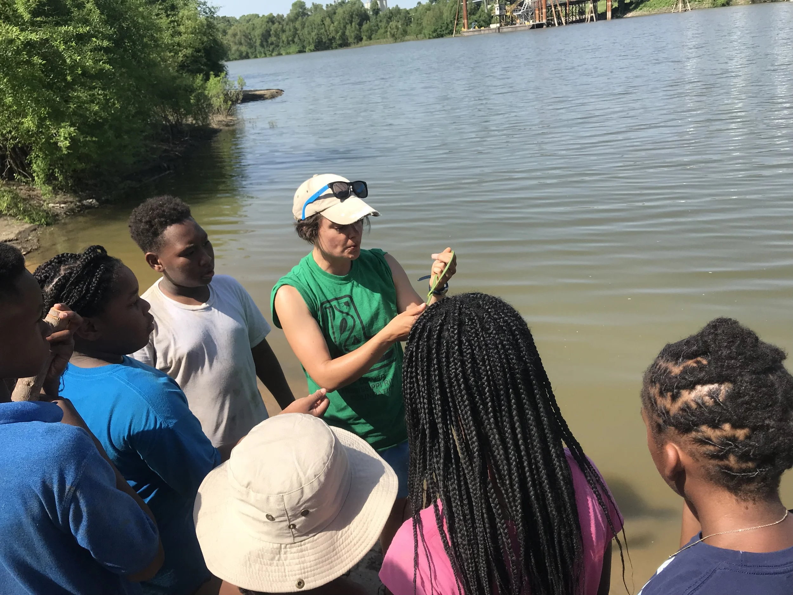
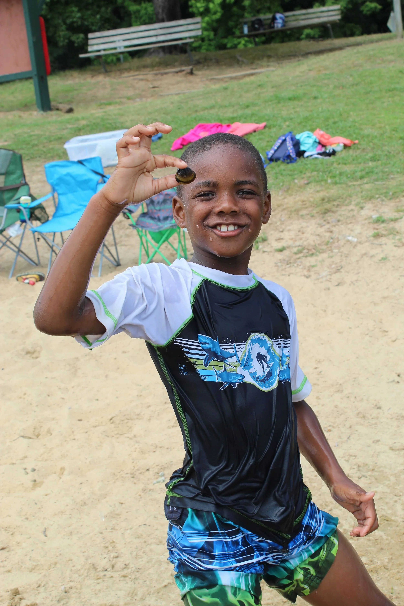
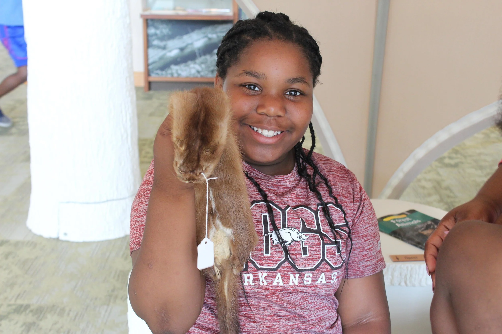
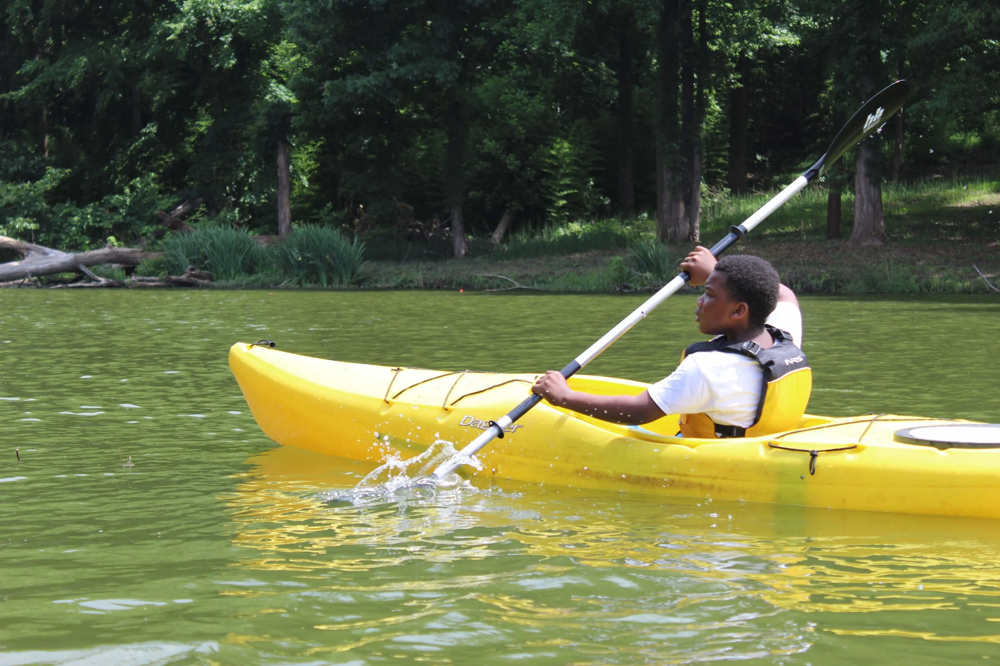
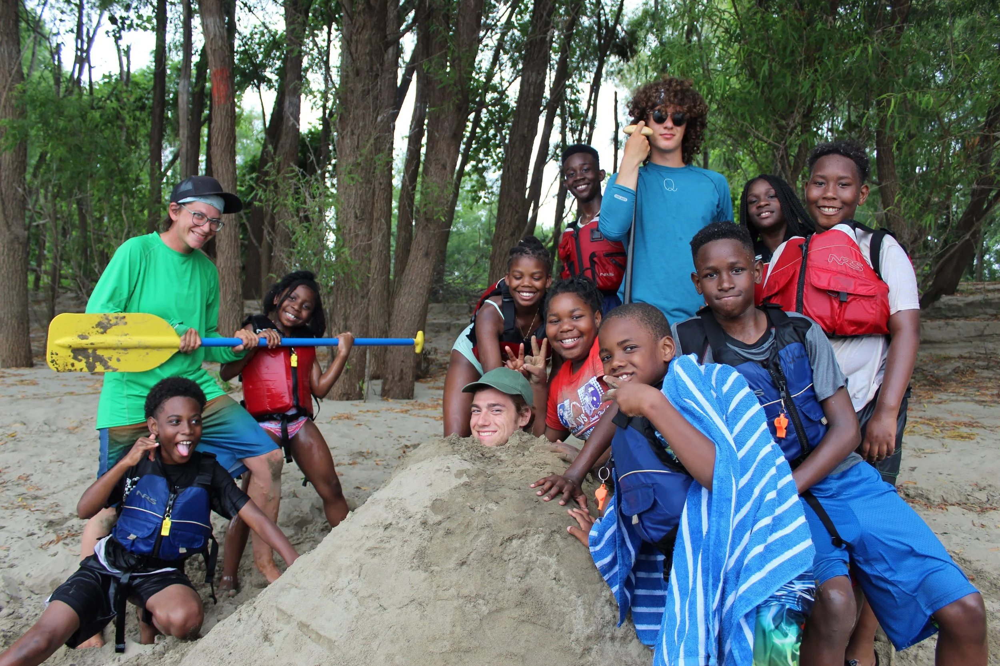
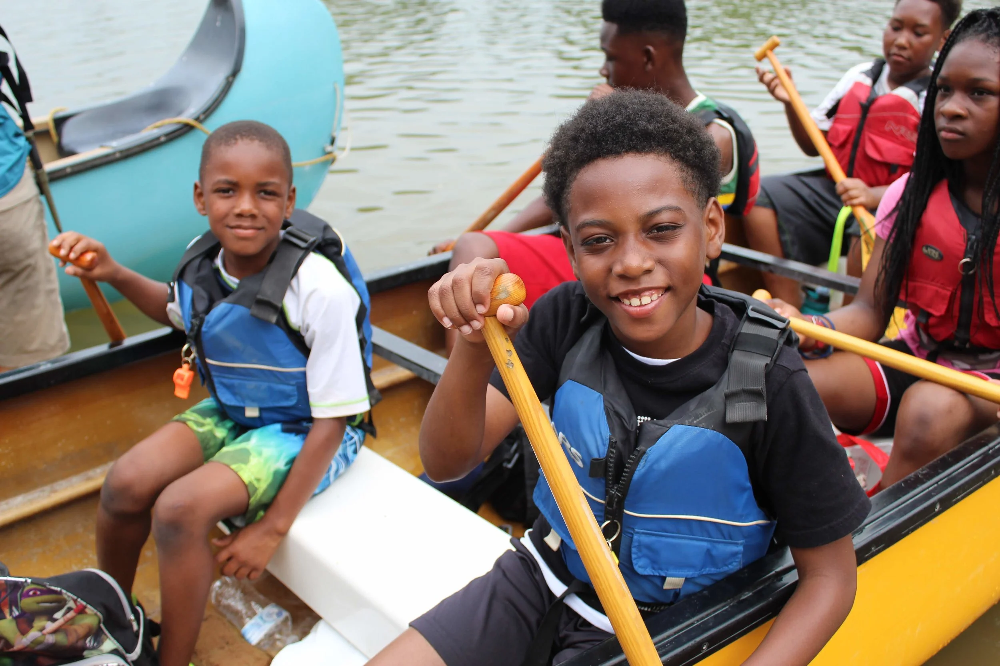
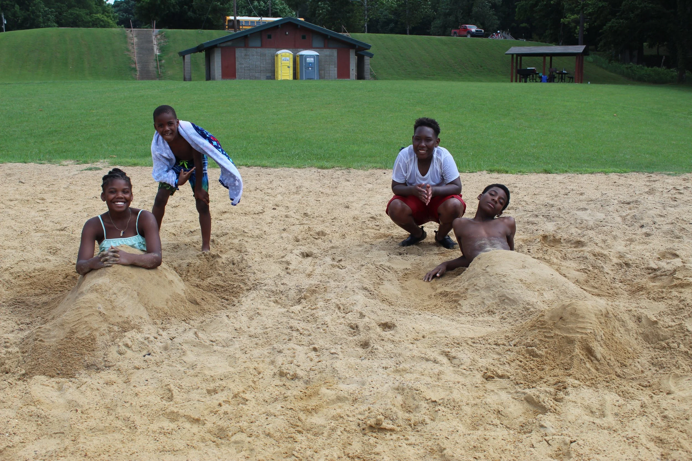
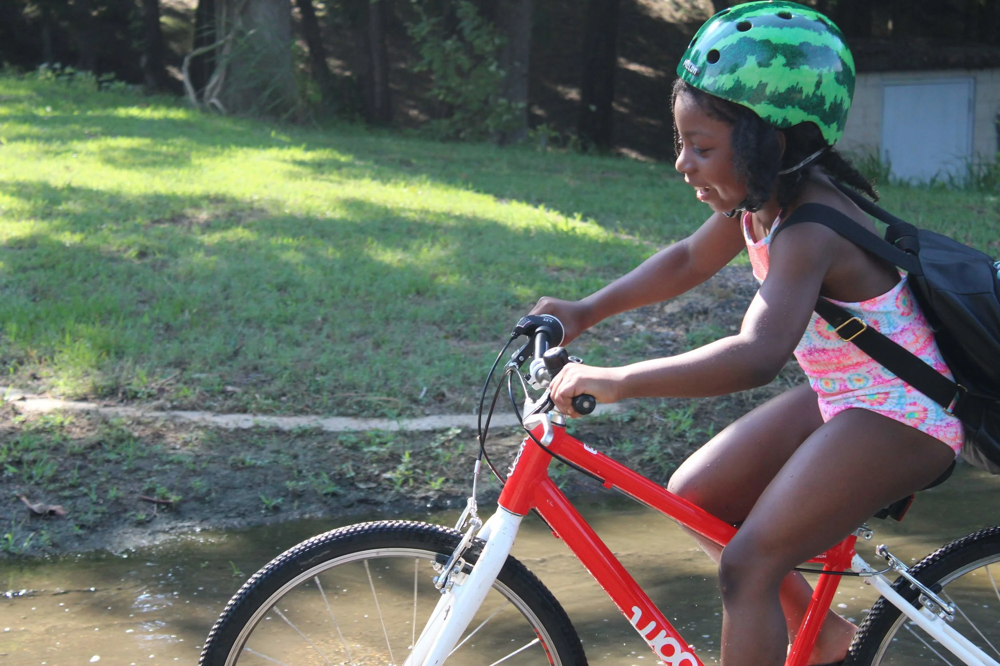
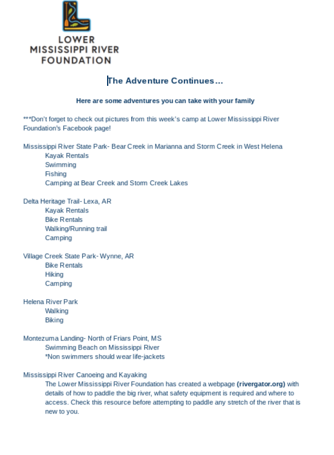

Becoming a steward starts early. My passion for conservation began with my parents taking us hiking almost every weekend. It's hard to not care about the outdoors when you learn to love it as a child. During the Delta Adventure Day Camp, we got to share all the amazing things the Mississippi Delta has to offer with a group of future stewards.


Day 1: On Day 1 we visited the Helena River Park and explored the plants and animals we found there (the highlight of the day was when I caught a snake to show, it was a harmless green rough-snake, but it was very impressive to the kids)


Day 2: Day 2 brought us to the Mississippi River State Park to explore their visitor center and swim at Bear Creek. Kids were excited to discover mussels living in the sand at the beach and even more interested when we found some that had been left open on a grill at the park!


Days 3-4: Although no one had been afraid to swim at the lake we had to overcome some fears on Day 3 and 4. We canoed to Buck Island on Day 3 and on Day 4 kayaked in Storm Creek. After getting over the initial terror, kids reflected on how they felt brave and how much more you can see of nature from the water.


Day 5: The last day we rode bikes from Storm Creek to an overlook above the Mississippi River. At the end of the day the kids were sad they wouldn't be back next week but we left each parent with a list of places they could go.

